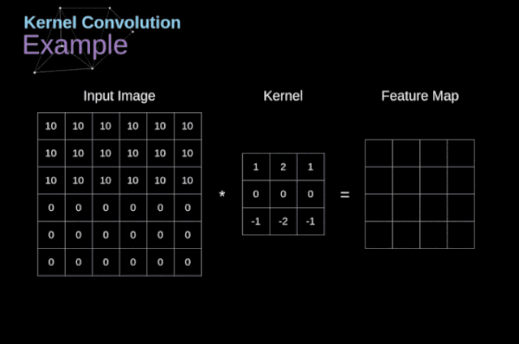

卷积神经网络数学原理解析
Contents
转载自https://mp.weixin.qq.com/s/gN5nNg3NfUsXVYcUZJtk-A
自动驾驶、智能医疗保健和自助零售这些领域直到最近还被认为是不可能实现的，而计算机视觉已经帮助我们达到了这些事情。如今，拥有自动驾驶汽车或自动杂货店的梦想听起来不再那么遥不可及了。事实上，我们每天都在使用计算机视觉——当我们用面部解锁手机或在社交媒体上发照片前使用自动修图。卷积神经网络可能是这一巨大成功背后最关键的构建模块。这一次，我们将加深理解神经网络如何工作于CNNs。出于建议，这篇文章将包括相当复杂的数学方程，如果你不习惯线性代数和微分，请不要气馁。我的目标不是让你们记住这些公式，而是让你们对下面发生的事情有一个直观的认识。
附注：这是我第一次决定用一个音频版本来丰富我的作品，诚挚地邀请你来听一听，您将在上面找到Soundcloud的链接。在这篇文章中，我主要关注CNNs的一些典型问题。如果您正在寻找关于深度神经网络更基础的信息，我建议您阅读我在本系列文章中的其他文章（https://towardsdatascience.com/https-medium-com-piotr-skalski92-deep-dive-into-deep-networks-math-17660bc376ba）。与往常一样，可以在我的GitHub（https://github.com/SkalskiP/ILearnDeepLearning.py）上找到带有可视化和注释的完整源代码，让我们开始吧!
介绍
过去我们已经知道被称为紧密连接的神经网络。这些网络的神经元被分成若干组，形成连续的层。每一个这样的神经元都与相邻层的每一个神经元相连。下图显示了这种体系结构的一个示例。
图1. 密集连接的神经网络结构
当我们根据一组有限的人工设计的特征来解决分类问题时，这种方法很有效。例如，我们根据足球运动员在比赛期间的统计数据来预测他的位置。然而，当处理照片时，情况变得更加复杂。当然，我们可以将每个像素的像素值作为单独的特征，并将其作为输入传递给我们的密集网络。不幸的是，为了让该网络适用于一张特定的智能手机照片，我们的网络必须包含数千万甚至数亿个神经元。另一方面，我们可以缩小我们的照片，但在这个过程中，我们会丢失一些有用的信息。我们立马意识到传统的策略对我们没有任何作用，我们需要一个新的有效的方法，以充分利用尽可能多的数据，但同时减少必要的计算和参数量。这就是CNNs发挥作用的时候了。
数字图像的数据结构
让我们先花一些时间来解释数字图像是如何存储的。你们大多数人可能知道它们实际上是由很多数字组成的矩阵。每一个这样的数字对应一个像素的亮度。在RGB模型中，彩色图像实际上是由三个对应于红、绿、蓝三种颜色通道的矩阵组成的。在黑白图像中，我们只需要一个矩阵。每个矩阵都存储0到255之间的值。这个范围是存储图像信息的效率（256之内的值正好可以用一个字节表达）和人眼的敏感度（我们区分有限数量的相同颜色灰度值）之间的折衷。
图2. 数字图像的数据结构
卷积
核卷积不仅用于神经网络，而且是许多其他计算机视觉算法的关键一环。在这个过程中，我们采用一个形状较小的矩阵(称为核或滤波器)，我们输入图像，并根据滤波器的值变换图像。后续的特征map值根据下式来计算，其中输入图像用f表示，我们的kernel用h表示，结果矩阵的行和列的索引分别用m和n表示。


图3. 核卷积的例子
将过滤器放置在选定的像素上之后，我们从kernel中提取每个相应位置的值，并将它们与图像中相应的值成对相乘。最后，我们总结了所有内容，并将结果放在输出特性图的对应位置。上面我们可以看到这样的操作在细节上是怎么实现的，但是更让人关注的是，我们通过在一个完整的图像上执行核卷积可以实现什么应用。图4显示了几种不同滤波器的卷积结果。
图4. 通过核卷积得到边缘[原图像：https://www.maxpixel.net/Idstein-Historic-Center-Truss-Facade-Germany-3748512]
有效卷积和相同卷积
如图3所示，当我们用3x3核对6x6的图像进行卷积时，我们得到了4x4特征图。这是因为只有16个不同的位置可以让我们把滤波器放在这个图片里。因为每次卷积操作，图像都会缩小，所以我们只能做有限次数的卷积，直到图像完全消失。更重要的是，如果我们观察卷积核如何在图像中移动，我们会发现位于图像边缘的像素的影响要比位于图像中心的像素小得多。这样我们就丢失了图片中包含的一些信息。通过下图，您可以知道像素的位置如何改变其对特征图的影响。
图5. 像素位置的影响
为了解决这两个问题，我们可以用额外的边框填充图像。例如，如果我们使用1px填充，我们将照片的大小增加到8x8，那么与3x3滤波器卷积的输出将是6x6。在实践中，我们一般用0填充额外的填充区域。这取决于我们是否使用填充，我们要根据两种卷积来判断-有效卷积和相同卷积。这样命名并不是很合适，所以为了清晰起见:Valid表示我们仅使用原始图像，Same表示我们同时也考虑原图像的周围边框，这样输入和输出的图像大小是相同的。在第二种情况下，填充宽度应该满足以下方程，其中p为填充宽度和f是滤波器维度（一般为奇数）。
步幅卷积
图6. 步幅卷积的例子
在前面的例子中，我们总是将卷积核每次移动一个像素。但是，步幅也可以看作卷积层超参数之一。在图6中，我们可以看到，如果我们使用更大的步幅，卷积看起来是什么样的。在设计CNN架构时，如果希望感知区域的重叠更少，或者希望feature map的空间维度更小，我们可以决定增加步幅。输出矩阵的尺寸——考虑到填充宽度和步幅——可以使用以下公式计算。
过渡到三维
空间卷积是一个非常重要的概念，它不仅能让我们处理彩色图像，更重要的是在单层中应用多个卷积核。第一个重要的原则是，过滤器和要应用它的图像必须具有相同通道数。基本上，这种方式与图3中的示例非常相似，不过这次我们将三维空间中的值与卷积核对应相乘。如果我们想在同一幅图像上使用多个滤波器，我们分别对它们进行卷积，将结果一个叠在一起，并将它们组合成一个整体。接收张量的维数(即我们的三维矩阵)满足如下方程:n-图像大小，f-滤波器大小，nc-图像中通道数，p-是否使用填充，s-使用的步幅，nf-滤波器个数。
图7. 三维卷积
卷积层
现在是时候运用我们今天所学的知识来构建我们的CNN层了。我们的方法和我们在密集连接的神经网络中使用的方法几乎是一样的，唯一的不同是这次我们将使用卷积而不是简单的矩阵乘法。正向传播包括两个步骤。第一步是计算中间值Z,这是利用输入数据和上一层权重W张量(包括所有滤波器)获得的卷积的结果,然后加上偏置b。第二步是将非线性激活函数的应用到获得的中间值上(我们的激活函数表示为g)。对矩阵方程感兴趣的读者可以在下面找到对应的数学公式。如果您不清楚其中的操作细节，我强烈推荐我的前一篇文章，在那篇文章中，我详细讨论了紧密连接的神经网络的原理。顺便说一下，在下图中你可以看到一个简单的可视化，描述了方程中使用的张量的维数。
图8. 张量维度
连接剪枝和参数共享
在文章的开头，我提到密集连接的神经网络不擅长处理图像，这是因为需要学习大量的参数。既然我们已经理解了卷积是什么，让我们现在考虑一下它是如何优化计算的。在下面的图中，以稍微不同的方式显示了二维卷积，以数字1-9标记的神经元组成了输入层，并接受图像像素亮度值，而A - D单元表示计算出的特征map元素。最后，I-IV是需要经过学习的卷积核的值。
图9. 连接剪枝和参数共享
现在，让我们关注卷积层的两个非常重要的属性。首先，你可以看到，并不是所有连续两层的神经元都相互连接。例如，神经元1只影响A的值。其次，我们看到一些神经元共享相同的权重。这两个性质都意味着我们需要学习的参数要少得多。顺便说一下，值得注意的是，滤波器中的一个值会影响特征map中的每个元素——这在反向传播过程中非常重要。
卷积层反向传播
任何尝试过从头编写自己的神经网络代码的人都知道，完成正向传播还没有完成整个算法流程的一半。真正的乐趣在于你想要进行反向传播得到时候。现在，我们不需要为反向传播这个问题所困扰，我们可以利用深度学习框架来实现这一部分，但是我觉得了解底层是有价值的。就像在密集连接的神经网络中，我们的目标是计算导数，然后用它们来更新我们的参数值，这个过程叫做梯度下降。
在我们的计算中需要用到链式法则——我在前面的文章中提到过。我们想评估参数的变化对最终特征map的影响，以及之后对最终结果的影响。在我们开始讨论细节之前，让我们就对使用的数学符号进行统一——为了让过程更加简化，我将放弃偏导的完整符号，而使用如下所示的更简短的符号来表达。但记住，当我用这个符号时，我总是指的是损失函数的偏导数。
图10. 单卷积层的输入和输出的正向和反向传播
我们的任务是计算dW[l]和db[l]——它们是与当前层参数相关的导数，以及dA[l -1]的值——它们将被传递到上一层。如图10所示，我们接收dA[l]作为输入。当然，张量dW和W、db和b以及dA和A的维数是相同的。第一步是通过对输入张量的激活函数求导得到中间值dZ[l]。根据链式法则，后面将使用这个操作得到的结果。
现在，我们需要处理卷积本身的反向传播，为了实现这个目的，我们将使用一个矩阵运算，称为全卷积，如下图所示。注意，在这个过程中，对于我们使用卷积核，之前我们将其旋转了180度。这个操作可以用下面的公式来描述，其中滤波器用W表示，dZ[m,n]是一个标量，属于上一层偏导数。

图11. 全卷积
池化层
除了卷积层，CNNs还经常使用所谓的池化层。池化层主要用于减小张量的大小和加速计算。这种网络层很简单——我们需要将图像分割成不同的区域，然后对每个部分执行一些操作。例如，对于最大值池化层，我们从每个区域中选择一个最大值，并将其放在输出中相应的位置。在卷积层的情况下，我们有两个超参数——滤波器大小和步长。最后一个比较重要的一点是，如果要为多通道图像进行池化操作，则应该分别对每个通道进行池化。
图12. 最大值池化的例子
池化层反向传播
在本文中，我们将只讨论最大值池化的反向传播，但是我们将学习的规则只需要稍加调整就可以适用于所有类型的池化层。由于在这种类型的层中，我们没有任何必须更新的参数，所以我们的任务只是适当地分布梯度。正如我们所记得的，在最大值池化的正向传播中，我们从每个区域中选择最大值，并将它们传输到下一层。因此，很明显，在反向传播过程中，梯度不应该影响矩阵中没有包含在正向传播中的元素。实际上，这是通过创建一个掩码来实现的，该掩码可以记住第一阶段中使用的值的位置，稍后我们可以使用该掩码来传播梯度。
图13. 最大值池化的反向传播
结论
恭喜你能来这里。非常感谢您花时间阅读本文。如果你喜欢这个帖子，您可以考虑向你的朋友，或者两个或五个朋友分享。如果你注意到任何错误的思维方式，公式，动画或代码，请让我知道。
本文是“神经网络之谜”系列文章的另一部分，如果您还没有机会阅读其他文章,请阅读其他文章（https://towardsdatascience.com/preventing-deep-neural-network-from-overfitting-953458db800a）。另外，如果你喜欢我所做的工作，在Twitter和Medium上关注我，也可以看看我正在做的其他项目，如GitHub（https://github.com/SkalskiP）和Kaggle（https://www.kaggle.com/skalskip）。保持好奇心！
Author nanshusu
LastMod 2021-09-07